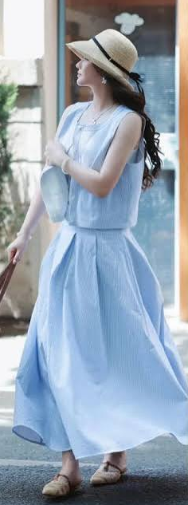
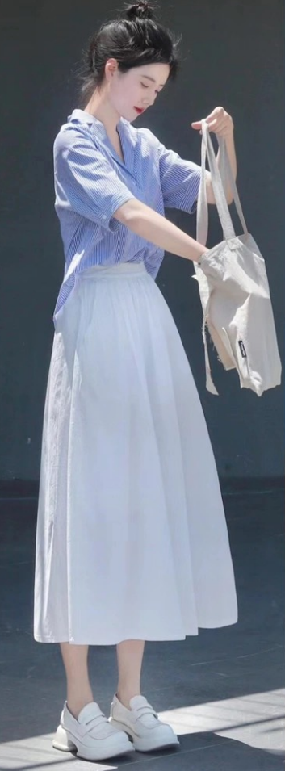

‹ 返回婚禮資訊
FOR HER · DRESS CODE
Ladies' Style
女士服裝配色
呼應「藍 · 白」主題的穿搭參考
洋裝、長裙都很適合,清爽優雅最好看
主題色盤 · COLOR PALETTE
海軍藍
寶藍
牛仔藍
淺藍
白
米白

LOOK 01
淺藍無袖長洋裝 · 草帽 · 編織涼鞋
LOOK 02
淺藍薄襯衫 · 白背心 · 淺藍長裙 · 草帽
LOOK 03
牛仔藍無袖洋裝 · 白帽 · 白涼鞋
LOOK 04
寶藍短袖上衣 · 白百褶短裙 · 白鞋
LOOK 05
牛仔藍背心洋裝 · 白T · 厚底鞋
LOOK 06
淺藍無袖上衣 · 白短褲 · 草帽 · 白涼鞋
LOOK 07
深藍背心 · 白色長裙 · 大地色鞋

LOOK 08
淺藍襯衫 · 白色長裙 · 托特包
LOOK 09
白色針織上衣 · 寶藍百褶長裙 · 草帽
✨
穿搭小提醒
1
以
藍 · 白
為主軸,
洋裝、長裙
最能呈現教堂婚禮的優雅感
2
淺藍、牛仔藍、白、米白都很好搭,單色或藍白相間都很適合
3
建議避開
純白色（新娘色）
;鞋子
切記不要穿拖鞋
4
沖繩 6 月偏熱、戶外日曬強,
草帽、薄外套
兼顧防曬與造型
👔 看男士服裝配色 ›